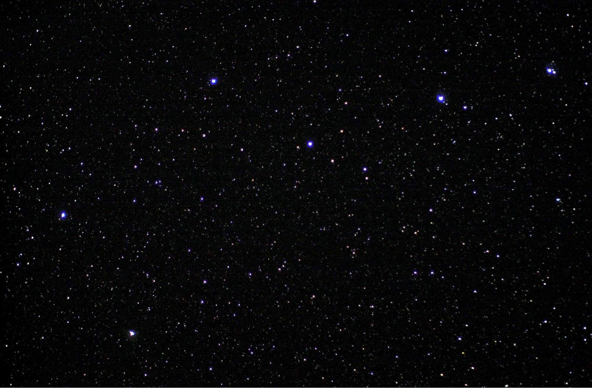

NASA / Astronaut Donald R. Pettit, Expedition 6
{kind=link}
To the naked eye, Mizar (apparent magnitude 2.04) appears alongside a fainter star, Alcor (80 Ursae Majoris, magnitude 3.99), separated by about 12 arcminutes. The pair was recognised across many ancient cultures as a test of keen eyesight. Arab astronomers named them the "Horse and Rider" (al-Suha for Alcor), while Roman legions reportedly used the pair as a standard vision test for soldiers. In Hindu tradition, Mizar represents the sage Vasishtha and Alcor his devoted wife Arundhati, figures invoked symbolically at wedding ceremonies to this day.
Mizar's two visual components, Mizar A (magnitude 2.23) and Mizar B (magnitude 3.88), are separated by 14.4 arcseconds and were first resolved telescopically in 1617 by the Italian mathematician Benedetto Castelli, who asked his teacher Galileo Galilei to confirm the observation. Giovanni Battista Riccioli formally catalogued the pair around 1650. In 1887, Edward Charles Pickering at the Harvard College Observatory noticed that Mizar A's calcium absorption lines periodically split in wavelength, revealing that two stars were orbiting each other far too closely to resolve optically. Antonia Maury subsequently computed and published the orbital solution in 1890 — the first spectroscopic binary orbit in the scientific literature, with a period of approximately 20.5 days. This opened the way for determining stellar masses from spectral data alone. In 1996, the two components of Mizar A were finally resolved directly by interferometry using the Navy Prototype Optical Interferometer.
Each of the two components of Mizar A is itself a close pair of nearly identical A2-type dwarf stars, each with mass about 2.2 solar masses, radius about 2.4 solar radii, temperature around 9,000 K, and luminosity about 33 times that of the Sun. Mizar B is also a spectroscopic binary, consisting of an Am (metallic-line) primary of 1.85 solar masses and a low-mass companion of about 0.25 solar masses in a 175-day orbit; Mizar A and B themselves orbit each other with a period estimated to exceed 5,000 years.
Alcor is also a binary: its A5-type primary (1.84 solar masses) is orbited by a faint red dwarf companion, Alcor B (spectral type M3–4), discovered in 2009. In 2011, the gravitational binding of Mizar and Alcor was confirmed, establishing the entire system as a senary (six-star) system. Both systems share a common proper motion as members of the Ursa Major Moving Group, a loose stellar association of common origin roughly 370 million years old. The Mizar–Alcor system is the second-closest known six-star system to Earth, after Castor.